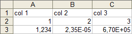

This page gives a short description of common fileformats that appear throughout QuickFit. If a plugin uses/creates a special fileformat, the format should be documented with the plugin!
This is the standard and most common format for spreadsheet like files. A CSV file represents a table of values, where each line of the file represents one line in the table. In each line the entries are separated by commas (,). This format uses points as decimal separators and strings are enclosed in double-quotes ". Note that some lines may be commented out by a leading hash character #. Here is an example:
# commented lineThis format can be read by Matlab using the function
"col 1", "col 2", col 3"
1,2,3
1.234, 2.345e-5, 6.7e5
And here is how this looks as a table:

M = csvread(filename)It may also be directly read by GnuPlot
This is a special version of the Comma Separated Values format which uses semicolons (;) as column separators and commas as decimal separators. This is especially suitable for Microsoft Excel installations with german language support, as reading the standard CSV is possible, but not handy. This is treated as standard format on german platforms by Excel.
This is a special version of the Comma Separated Values format which uses tabulators as column separators.
This format can be read by Matlab using the function
M = dlmread(filename, '\t')
This is a spreadsheet format that also supports limited formatting and can be read by a variety of different software packages (Microsoft Excel, Libre Office, Open Office, ...). More information can be found in Wikipedia
This is a spreadsheet format and can be read by a variety of different software packages (Microsoft Excel, Libre Office, Open Office, ...). More information can be found in Wikipedia
Mathworks defined a binary file format for data storage in their Matlab numerics program. QuickFit $$version$$ can store data into this format. The data will be saved as a cell array, or (if possible) as a simple number matrix. A .mat file can be loaded into Matlab (or also GNU Octave) using the instruction
Quickfit and especially the table plugin use this file format (XML dialect) to store tables to disk. The format does not only save the data in each cell, as well as column and row headers, but also additional properties and data, such as table expressions etc. A typical .qftxml file looks like this:
<?xml version="1.0"?>
<qfrdrtable>
<state.columns>
<!-- these tags give the column names -->
<col col="0" name="fit_model_name"/>
<col col="1" name="fit_used_run"/>
<col col="2" name="fitalg_error_sum"/>
</state.columns>
<data>
<!-- row names are stored as a first column -->
<cell row="0" col="0" type="string">20nM_488_Day2_04s.asc - CH0: fcs_fit_14_fcs_adiff_runavg</cell>
<cell row="1" col="0" type="string">20nM_488_Day2_04s.asc - CH0: fcs_fit_14_fcs_diff_run0</cell>
<cell row="2" col="0" type="string">20nM_488_Day2_04s.asc - CH0: fcs_fit_14_fcs_diff_run1</cell>
<!-- here is the actual data. In each cell-tag, row/col indicate the cell location and type the datatype, the tag contents is the actual data -->
<cell row="0" col="1" type="string">fcs_adiff</cell>
<cell row="1" col="1" type="string">fcs_diff</cell>
<cell row="2" col="1" type="string">fcs_diff</cell>
<cell row="0" col="2" type="longlong">-1</cell>
<cell row="1" col="2" type="longlong">0</cell>
<cell row="2" col="2" type="longlong">1</cell>
<cell row="0" col="3" type="double">43.9024</cell>
<cell row="1" col="3" type="double">15.24396403</cell>
<cell row="2" col="3" type="double">14.60922039</cell>
</data>
</qfrdrtable>
QuickFit allows at several points to save data as Tagged Image File Format (TIFF) files. This format allows to also save multiple frames into a single file. The frames may have different data formats ranging from 1-bit black/white images, to 8-bit integers, to 64-bit floating point numbers (double). Several channels per pixel are also possible. An application that can read a fair amount of multi-frame TIFF files is ImageJ or FIJI ... is just ImageJ. Many other applications have support for TIFF, but note that many computer graphics programs only read integer images and maybe not high-resolution images. Also the most common library to read TIFF file is libTIFF which may read any TIFF file but is limited to at most 65000 frames per file (this limit does not apply to ImageJ!).
Single-frame image may be read in Matlab using
M = imread(filename, 'TIFF')Reading mult-frame TIFFs however is a bit more complicated:
inf=imfinfo(filename);
N=length(inf);
inf=inf(1);
disp(['frame size ' num2str(inf.Width) 'x' num2str(inf.Height)]);
disp(['number of frames ' num2str(N)]);
M=zeros(inf.Width, inf.Height, N);
for k=1:N
M(:,:,k)=imread(filename, k);
end
Some plugins define (and document) their own file formats. These are: